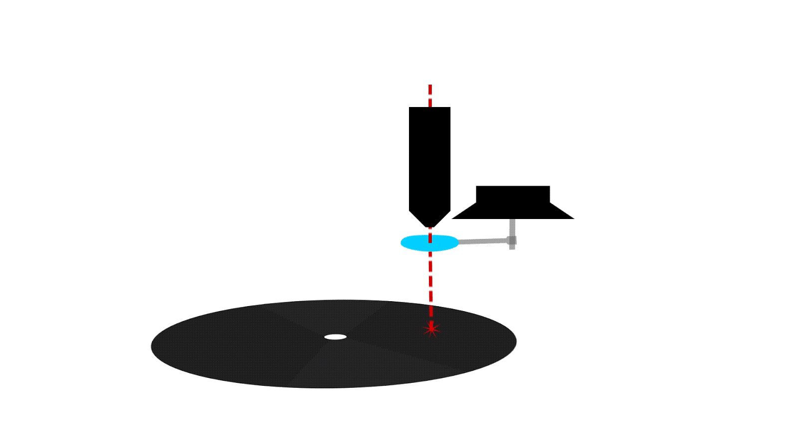

{kind=link}
What?
Vinyl records are expensive. Just kidding, they're super cheap at thrift stores if you like old people music. But what if you could burn your own records onto unconventional materials? I rebuilt the cutting head of my laser cutter into a speaker driven lens moving record engraver.
It works like this: put an entire record player under the laser. The blank record rotates at its playback speed underneath the cutting head. When music is played through the speaker the cutting lens vibrates which changes the beam angle. The changing beam angle engraves the physical audio waveform into the record.
| Animation by the ever talented CameraManJohn |
{kind=link}
Why?
So we can burn modern music to play on our record players:
Download
Video
Filming by CameraManJohn
Design
Attempt 1
The first experiment was strapping a cheap dollar store speaker to the cutting head using tape.
| Speaker only engraving cardboard |
{kind=link}
To nobody's surprise, this had literally no effect.
Attempt 2
The second experiment was building a jig to twist the lens.
|  |
| lens twist animation |
{kind=link}
{kind=link}
All of the parts were cut on the laser cutter using the lens we are going to strap to this jig. If something breaks the whole thing needs to be disassembled and reinstalled to cut replacements.
{kind=link}
{kind=link}
Here's me crying on the floor in frustration after breaking the acrylic lens holder a fifth time. I switched to Delrin.
{kind=link}
Then the $50 laser lens was hot glued to the holder.
I let He-Man rip, and turned the laser on.
Playing the record back, there was no trace of He-Man's beautiful voice :(
THIS WORKED WAY BETTER
I let He-Man rip, and turned the laser on.
{kind=link}
Playing the record back, there was no trace of He-Man's beautiful voice :(
{kind=link}
Attempt 3
The second jig was designed with the speaker pushing the lens horizontally.
{kind=link}
The thin "hinge" sections are more like springs now for horizontal displacement.
Success!!!! You may not be able to hear it on a cellphone since mostly low frequencies made it through to the cardboard.
{kind=link}
Attempt 3.5
There is clearly promise, but we're trying to vibrate too much mass too quickly; all of the higher frequencies are muffled. There are three options: reduce mass, increase speaker power, decrease speaker load. Cutting the speaker cone off will reduce the load by decreasing the amount of energy expelled into the air as sound.THIS WORKED WAY BETTER
{kind=link}
Attempt 4
We tried burning onto acrylic and blank CD's, but the results weren't much better than above, just less noise.
Attempt 5
The last attempt didn't make it into the video. We suspended the last laser mirror from the speaker, but too much noise from the stepper motors made it through.
Conclusion
WAY too much time was spent on this video. I think it could be better done by vibrating a mirror instead of the lens, or by modulating the laser power (borrrrrring)
The laser can't engrave a line as fine as a real vinyl record, which might have something to do with only low frequencies getting through. CameraManJohn suggested boosting the high frequencies in the audio, but we never tried.
*edit* Apparently, thanks to angry commenters, this is actually how real records are prepared. An equalization curve called the RIAA helps higher frequencies carry through.
*edit* Apparently, thanks to angry commenters, this is actually how real records are prepared. An equalization curve called the RIAA helps higher frequencies carry through.
Once idea is to spin the record and play audio at half speed to double the frequency response. However this is way more effort than just letting the record spin at it's playback speed.
Here's a cool web-app optics sandbox: https://ricktu288.github.io/ray-optics/simulator/
Here's a cool web-app optics sandbox: https://ricktu288.github.io/ray-optics/simulator/
The End
byyeeeeee
This comment has been removed by the author.
ReplyDeleteDear William, I just wanted to say that I absolutely LOVE your videos!!!! The only way I think you could improve is to make more. I literally get so excited when my phone notifies me of a new video. Keep up the excellent work!!!üëç üëç --Monica
ReplyDelete